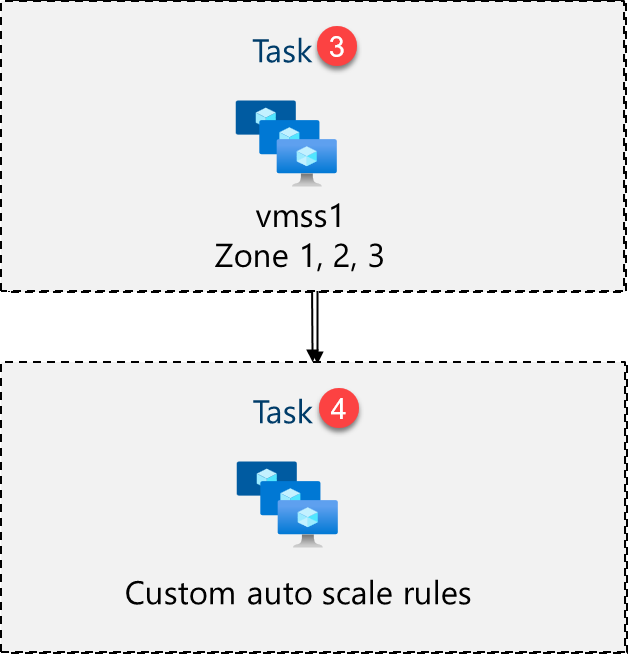
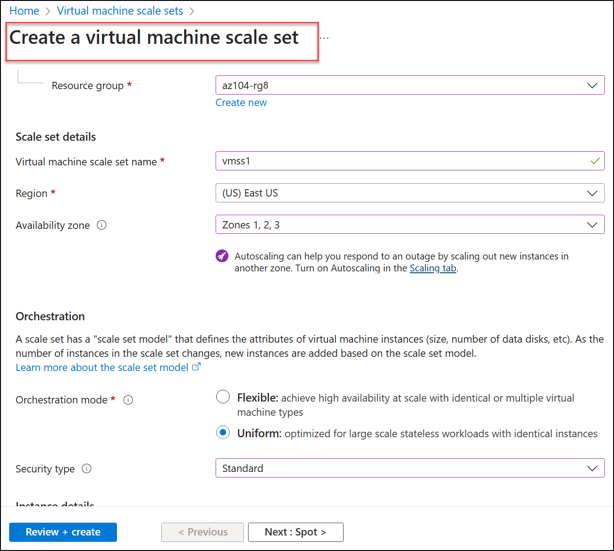
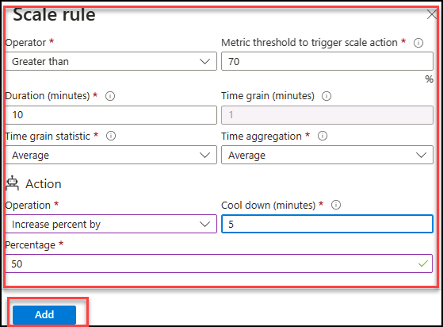

Lab - Manage Virtual Machines¶
Lab Introduction¶
In this lab, you create and compare virtual machines to virtual machine scale sets. You learn how to create, configure and resize a single virtual machine. You learn how to create a virtual machine scale set and configure autoscaling.
This lab requires an Azure subscription. Your subscription type may affect the availability of features in this lab. You may change the region, but the steps are written using East US.
Estimated Timing: 50 Minutes¶
Lab Scenario¶
Adamantus Technologies wants to explore deploying and configuring Azure virtual machines. First, you implement an Azure virtual machine with manual scaling. Next, you implement a Virtual Machine Scale Set and explore autoscaling.
Interactive Lab Simulations¶
There are interactive lab simulations that you might find useful for this topic. The simulation lets you to click through a similar scenario at your own pace. There are differences between the interactive simulation and this lab, but many of the core concepts are the same. An Azure subscription is not required.
-
Create a Virtual Machine in the Portal. Create a virtual machine, connect and install the web server role.
-
Deploy a Virtual Machine with a Template. Explore the QuickStart gallery and locate a virtual machine template. Deploy the template and verify the deployment.
-
Create a Virtual Machine with PowerShell. Use Azure PowerShell to deploy a virtual machine. Review Azure Advisor recommendations.
-
Create a Virtual Machine with the CLI. Use the CLI to deploy a virtual machine. Review Azure Advisor recommendations.
Job Skills¶
- Task 1: Deploy zone-resilient Azure virtual machines by using the Azure portal.
- Task 2: Manage compute and storage scaling for virtual machines.
- Task 3: Create and configure Azure Virtual Machine Scale Sets.
- Task 4: Scale Azure Virtual Machine Scale Sets.
- Task 5: Create a virtual machine using Azure PowerShell (optional 1).
- Task 6: Create a virtual machine using the CLI (optional 2).
Azure Virtual Machines Architecture Diagram¶

Task 1: Deploy zone-resilient Azure Virtual Machines by using the Azure Portal¶
In this task, you will deploy two Azure virtual machines into different availability zones by using the Azure portal. Availability zones offer the highest level of uptime SLA for virtual machines at 99.99%. To achieve this SLA, you must deploy at least two virtual machines across different availability zones.
-
Sign in to the Azure portal -
https://portal.azure.com. -
Search for and select
Virtual machines, on the Virtual machines blade, click + Create, and then select in the drop-down Azure virtual machine. Notice your other choices. -
On the Basics tab, in the Availability zone drop down menu, place a checkmark next to Zone 2. This should select both Zone 1 and Zone 2.
Note: This will deploy two virtual machines in the selected region, one in each zone. You achieve the 99.99% uptime SLA because you have at least two VMs distributed across at least two zones. In the scenario where you might only need one VM, it is a best practice to still deploy the VM to another zone.
-
On the Basics tab, continue completing the configuration:
Setting Value Subscription the name of your Azure subscription Resource group az104-rg8 (If necessary, click Create new) Virtual machine names az104-vm1andaz104-vm2(After selecting both availability zones, select Edit names under the VM name field.)Region East US Availability options Availability zone Availability zone Zone 1, 2 (read the note about using virtual machine scale sets) Security type Standard Image Windows Server 2019 Datacenter - x64 Gen2 Azure Spot instance unchecked Size Standard D2s v3 Username localadminPassword Provide a secure password Public inbound ports None Would you like to use an existing Windows Server license? Unchecked 
-
Click Next : Disks > , specify the following settings (leave others with their default values):
Setting Value OS disk type Premium SSD Delete with VM checked (default) Enable Ultra Disk compatibility Unchecked -
Click Next : Networking > take the defaults but do not provide a load balancer.
Setting Value Delete public IP and NIC when VM is deleted Checked Load balancing options None -
Click Next : Management > and specify the following settings (leave others with their default values):
Setting Value Patch orchestration options Azure orchestrated -
Click Next : Monitoring > and specify the following settings (leave others with their default values):
Setting Value Boot diagnostics Disable -
Click Next : Advanced >, take the defaults, then click Review + Create.
-
After the validation, click Create.
Note: Notice as the virtual machine deploys the NIC, disk, and public IP address (if configured) are independently created and managed resources.
-
Wait for the deployment to complete, then select Go to resource.
Note: Monitor the Notification messages.
Task 2: Manage Compute and Storage Scaling for Virtual Machines¶
In this task, you will scale a virtual machine by adjusting its size to a different SKU. Azure provides flexibility in VM size selection so that you can adjust a VM for periods of time if it needs more (or less) compute and memory allocated. This concept is extended to disks, where you can modify the performance of the disk, or increase the allocated capacity.
-
On the az104-vm1 virtual machine, in the Availability + scale blade, select Size.
-
Set the virtual machine size to D2ds_v4 and click Resize. When prompted, confirm the change.
Note: Choose another size if D2ds_v4 is not available. Resizing is also known as vertical scaling, up or down.

-
In the Settings area, select Disks.
-
Under Data disks select + Create and attach a new disk. Configure the settings (leave other settings at their default values).
Setting Value Disk name vm1-disk1Storage type Standard HDD Size (GiB) 32 -
Click Apply.
-
After the disk has been created, click Detach (if necessary, scroll to the right to view the detach icon), and then click Apply.
Note: Detaching removes the disk from the VM but keeps it in storage for later use.
-
Search for and select
Disks. From the list of disks, select the vm1-disk1 object.Note: The Overview blade also provides performance and usage information for the disk.
-
In the Settings blade, select Size + performance.
-
Set the storage type to Standard SSD, and then click Save.
-
Navigate back to the az104-vm1 virtual machine and select Disks.
-
In the Data disk section, select Attach existing disks.
-
In the Disk name drop-down, select VM1-DISK1.
-
Verify the disk is now Standard SSD.
-
Select Apply to save your changes.
Note: You have now created a virtual machine, scaled the SKU and the data disk size. In the next task we use Virtual Machine Scale Sets to automate the scaling process.
Azure Virtual Machine Scale Sets Architecture Diagram¶

Task 3: Create and configure Azure Virtual Machine Scale Sets¶
In this task, you will deploy an Azure virtual machine scale set across availability zones. VM Scale Sets reduce the administrative overhead of automation by enabling you to configure metrics or conditions that allow the scale set to horizontally scale, scale in or scale out.
-
In the Azure portal, search for and select
Virtual machine scale setsand, on the Virtual machine scale sets blade, click + Create. -
On the Basics tab of the Create a virtual machine scale set blade, specify the following settings (leave others with their default values) and click Next : Spot >:
Setting Value Subscription the name of your Azure subscription Resource group az104-rg8 Virtual machine scale set name vmss1Region (US)East US Availability zone Zones 1, 2, 3 Orchestration mode Uniform Security type Standard Scaling options Review and take the defaults. We will change this in the next task. Image Windows Server 2019 Datacenter - x64 Gen2 Run with Azure Spot discount Unchecked Size Standard D2s_v3 Username localadminPassword Provide a secure password Already have a Windows Server license? Unchecked Note: For the list of Azure regions which support deployment of Windows virtual machines to availability zones, refer to What are Availability Zones in Azure?

-
On the Spot tab, accept the defaults and select Next : Disks >.
-
On the Disks tab, accept the default values and click Next : Networking >.
-
On the Networking page, select Edit virtual network link. Make a few changes. When finished, select OK.
Setting Value Name vmss-vnetAddress range 10.82.0.0/20(delete the existing address range)Subnet name subnet0Subnet range 10.82.0.0/24 -
In the Networking tab, click the Edit network interface icon to the right of the network interface entry.
-
For NIC network security group section, select Advanced and then click Create new under the Configure network security group drop-down list.
-
On the Create network security group blade, specify the following settings (leave others with their default values):
Setting Value Name vmss1-nsg -
Click Add an inbound rule and add an inbound security rule with the following settings (leave others with their default values):
Setting Value Source Any Source port ranges * Destination Any Service HTTP Action Allow Priority 1010 Name allow-http -
Click Add and, back on the Create network security group blade, click OK.
-
In the Edit network interface blade, in the Public IP address section, click Enabled and click OK.
-
In the Networking tab, under the Load balancing section, specify the following (leave others with their default values).
Setting Value Load balancing options Azure load balancer Select a load balancer Create a load balancer -
On the Create a load balancer page, specify the load balancer name and take the defaults. Click Create when you are done then Next : Management >.
Setting Value Load balancer name vmss-lbNote: Pause for a minute and review what you done. At this point, you have configured the virtual machine scale set with disks and networking. In the network configuration you have created a network security group and allowed HTTP. You have also created a load balancer with a public IP address.
-
On the Management tab, specify the following settings (leave others with their default values):
Setting Value Boot diagnostics Disable -
Click Next : Health >.
-
On the Health tab, review the default settings without making any changes and click Next : Advanced >.
-
On the Advanced tab, click Review + create.
-
On the Review + create tab, ensure that the validation passed and click Create.
Note: Wait for the virtual machine scale set deployment to complete. This should take approximately 5 minutes.
Task 4: Scale Azure Virtual Machine Scale Sets¶
In this task, you scale the virtual machine scale set using a custom scale rule.
-
Select Go to resource or search for and select the vmss1 scale set.
-
Choose Availability + Scale from the left side menu, then choose Scaling.
Did you know? You can Manual scale or Custom autoscale. In scale sets with a small number of VM instances, increasing or decreasing the instance count (Manual scale) may be best. In scale sets with a large number of VM instances, scaling based on metrics (Custom autoscale) may be more appropriate.
Scale out Rule
-
Select Custom autoscale. Then change the Scale mode to Scale based on metric. And then select Add a rule.
-
Let's create a rule that automatically increases the number of VM instances. This rule scales out when the average CPU load is greater than 70% over a 10-minute period. When the rule triggers, the number of VM instances is increased by 50%.
Setting Value Metric source Current resource (vmss1) Metric namespace Virtual Machine Host Metric name Percentage CPU (review your other choices) Operator Greater than Metric threshold to trigger scale action 70 Duration (minutes) 10 Time grain statistic Average Operation Increase percent by (review other choices) Cool down (minutes) 5 Percentage 50 
-
Be sure to Save your changes.
Scale in Rule
-
During evenings or weekends, demand may decrease so it is important to create a scale in rule.
-
Let's create a rule that decreases the number of VM instances in a scale set. The number of instances should decrease when the average CPU load drops below 30% over a 10-minute period. When the rule triggers, the number of VM instances is decreased by 20%.
-
Select Add a rule, adjust the settings, then select Add.
Setting Value Operator Less than Threshold 30 Operation decrease percentage by (review your other choices) Percentage 50 -
Be sure to Save your changes.
Set the instance limits
-
When your autoscale rules are applied, instance limits make sure that you do not scale out beyond the maximum number of instances or scale in beyond the minimum number of instances.
-
Instance limits are shown on the Scaling page after the rules.
Setting Value Minimum 2 Maximum 10 Default 2 -
Be sure to Save your changes
-
On the vmss1 page, select Instances. This is where you would monitor the number of virtual machine instances.
Note: If you are interested in using Azure PowerShell for virtual machine creation, try Task 5. If you are interested in using the CLI to create virtual machines, try Task 6.
Task 5: Create a Virtual Machine using Azure PowerShell (option 1)¶
-
Use the icon (top right) to launch a Cloud Shell session. Alternately, navigate directly to
https://shell.azure.com. -
Be sure to select PowerShell. If necessary, configure the shell storage.
-
Run the following command to create a virtual machine. When prompted, provide a username and password for the VM. While you wait check out the New-AzVM command reference for all the parameters associated with creating a virtual machine.
powershell New-AzVm ` -ResourceGroupName 'az104-rg8' ` -Name 'myPSVM' ` -Location 'East US' ` -Image 'Win2019Datacenter' ` -Zone '1' ` -Size 'Standard_D2s_v3' ` -Credential (Get-Credential) -
Once the command completes, use Get-AzVM to list the virtual machines in your resource group.
powershell Get-AzVM ` -ResourceGroupName 'az104-rg8' ` -Status -
Verify your new virtual machine is listed and the Status is Running.
-
Use Stop-AzVM to deallocate your virtual machine. Type Yes to confirm.
powershell Stop-AzVM ` -ResourceGroupName 'az104-rg8' ` -Name 'myPSVM' -
Use Get-AzVM with the -Status parameter to verify the machine is deallocated.
Did you know? When you use Azure to stop your virtual machine, the status is deallocated. This means that any non-static public IPs are released, and you stop paying for the VMs compute costs.
Task 6: Create a Virtual Machine using the CLI (option 2)¶
-
Use the icon (top right) to launch a Cloud Shell session. Alternately, navigate directly to
https://shell.azure.com. -
Be sure to select Bash. If necessary, configure the shell storage.
-
Run the following command to create a virtual machine. When prompted, provide a username and password for the VM. While you wait check out the az vm create command reference for all the parameters associated with creating a virtual machine.
sh az vm create --name myCLIVM --resource-group az104-rg8 --image Ubuntu2204 --admin-username localadmin --generate-ssh-keys -
Once the command completes, use az vm show to verify your machine was created.
sh az vm show --name myCLIVM --resource-group az104-rg8 --show-details -
Verify the powerState is VM Running.
-
Use az vm deallocate to deallocate your virtual machine. Type Yes to confirm.
sh az vm deallocate --resource-group az104-rg8 --name myCLIVM -
Use az vm show to ensure the powerState is VM deallocated.
Did you know? When you use Azure to stop your virtual machine, the status is deallocated. This means that any non-static public IPs are released, and you stop paying for the VMs compute costs.
Cleanup your Resources¶
If you are working with your own subscription take a minute to delete the lab resources. This will ensure resources are freed up and cost is minimized. The easiest way to delete the lab resources is to delete the lab resource group.
- In the Azure portal, select the resource group, select Delete the resource group, Enter resource group name, and then click Delete.
- Using Azure PowerShell,
Remove-AzResourceGroup -Name resourceGroupName. - Using the CLI,
az group delete --name resourceGroupName.
Key Takeaways¶
Congratulations on completing the lab. Here are the main takeaways for this lab.
- Azure virtual machines are on-demand, scalable computing resources.
- Azure virtual machines provide both vertical and horizontal scaling options.
- Configuring Azure virtual machines includes choosing an operating system, size, storage and networking settings.
- Azure Virtual Machine Scale Sets let you create and manage a group of load balanced VMs.
- The virtual machines in a Virtual Machine Scale Set are created from the same image and configuration.
- In a Virtual Machine Scale Set the number of VM instances can automatically increase or decrease in response to demand or a defined schedule.
Address: H-34, Ground Floor, Sector 63, Noida, Uttar Pradesh
Email: info@ceekh.com